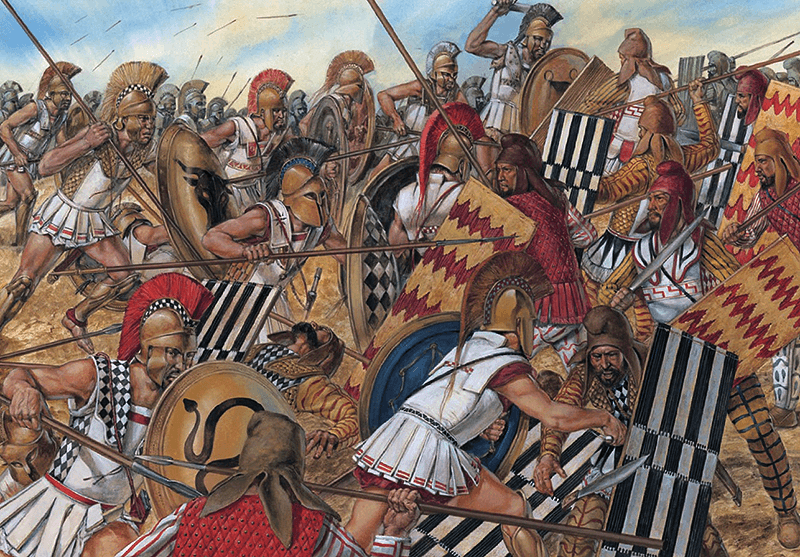
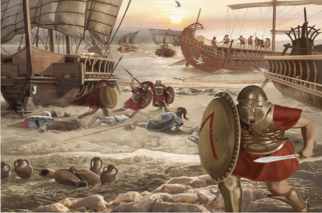
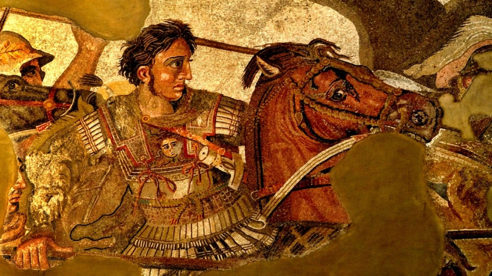

Su epoca dorada
Es considerado la época de mayor esplendor de la civilización griega. Durante este tiempo, Grecia alcanzó su máximo desarrollo en política, filosofía, arte y cultura, dejando un legado que sigue influyendo en el mundo moderno.
Auge de las Polis y la Democracia en Atenas
Durante el Período Clásico, las polis griegas continuaron su desarrollo, pero Atenas se destacó como el centro político y cultural más influyente. Bajo el liderazgo de Pericles, Atenas consolidó la democracia, permitiendo que los ciudadanos participaran en la toma de decisiones.
Las instituciones clave de la democracia ateniense fueron:
Este sistema democrático, aunque limitado a ciudadanos varones libres, sentó las bases de la política moderna.
Las Guerras Médicas (499-449 a.C.)
Uno de los eventos más importantes del Período Clásico fueron las Guerras Médicas, en las que los griegos lucharon contra el poderoso Imperio Persa.
- La Primera Guerra Médica (492–490 a.C.) fue el primer gran intento del Imperio Persa, bajo el mando de Darío I, por someter a las polis griegas, en respuesta
al apoyo que Atenas y Eretria habían brindado a la revuelta jónica en Asia Menor. Tras una fallida expedición inicial en 492 a.C., los persas lanzaron un segundo
ataque en 490 a.C., que logró destruir Eretria antes de desembarcar en la llanura de Maratón. Allí, un ejército ateniense dirigido por Milcíades logró una sorpresiva
victoria frente a las fuerzas persas, marcando un hito en la historia griega por haber demostrado que el poderoso ejército persa podía ser vencido. Esta victoria fortaleció
el orgullo y la autonomía de Atenas, y pospuso temporalmente la amenaza persa.

- La Segunda Guerra Médica (480–479 a.C.) fue una invasión masiva organizada por Jerjes I, hijo de Darío, diez años después de Maratón, con el objetivo de conquistar toda Grecia.
Con un ejército colosal, Jerjes cruzó el Helesponto y se enfrentó a la resistencia griega, que se unió en una alianza liderada por Esparta y Atenas. En 480 a.C., los persas
vencieron en las Termópilas, donde el rey Leónidas y sus 300 espartanos resistieron heroicamente, pero luego fueron derrotados. Sin embargo, la victoria naval griega en la Batalla
de Salamina, dirigida por Temístocles, cambió el rumbo de la guerra. Finalmente, en 479 a.C., las batallas de Platea y Mícala sellaron la derrota persa y consolidaron la libertad
de las polis griegas, marcando el inicio de la hegemonía ateniense en el mundo helénico
La Guerra del Peloponeso (431-404 a.C.)
La Guerra del Peloponeso (431–404 a.C.) fue un prolongado conflicto entre Atenas y su imperio marítimo, liderado por la Liga de Delos, contra Esparta y sus aliados del Peloponeso, reunidos en la Liga del Peloponeso. Esta guerra fue una lucha por la supremacía en el mundo griego, motivada por la creciente expansión y poder de Atenas tras las Guerras Médicas, lo que generó temor y rivalidad en Esparta. Se desarrolló en diversas fases (incluyendo una breve paz) y abarcó enfrentamientos tanto en tierra como en mar, con escenarios clave como Atenas , Esparta, Sicilia y la región del Egeo. Entre los personajes destacados estuvieron Pericles, líder ateniense al inicio del conflicto; Alcibíades, político hábil pero traidor; y Lisandro, comandante espartano que finalmente logró la victoria. La guerra culminó con la rendición de Atenas en 404 a.C., marcando el fin de su imperio y el inicio de la hegemonía espartana, aunque debilitó a toda Grecia, dejándola vulnerable frente a futuras amenazas como la expansión macedónica.

La Conquista de Grecia por Alejandro Magno (Final del Período Clásico, 323 a.C.)
La conquista de Alejandro Magno, realizada entre 334 y 323 a.C., fue una de las campañas militares más impresionantes de la historia antigua. Tras heredar el trono de Macedonia a los 20 años, Alejandro consolidó su poder en Grecia y emprendió su ambicioso objetivo: vengar la invasión persa y crear un imperio universal que uniera Oriente y Occidente bajo su liderazgo. En el año 334 a.C., cruzó el Helesponto hacia Asia Menor con un ejército macedonio-griego y obtuvo su primera gran victoria en la Batalla del Gránico. Luego derrotó al emperador persa Darío III en Issos (333 a.C.), y tras tomar Fenicia y Egipto —donde fundó la famosa ciudad de Alejandría—, se proclamó hijo de Amón-Ra. En Gaugamela (331 a.C.), obtuvo una victoria decisiva que llevó al colapso del Imperio Persa. Alejandro continuó su avance hacia el este, conquistando Babilonia, Susa y Persépolis, y luego se adentró en Asia Central, enfrentando una difícil resistencia en lugares como Bactriana y Sogdiana. Motivado por el deseo de alcanzar los confines del mundo, marchó hacia la India, donde venció al rey Poros en la Batalla del Hidaspes (326 a.C.), aunque su ejército, agotado, se negó a seguir avanzando. A lo largo de sus conquistas, Alejandro fundó numerosas ciudades, difundió la cultura griega (helenismo) y promovió la fusión entre griegos y pueblos orientales mediante matrimonios y costumbres compartidas. Murió en Babilonia en el 323 a.C., con apenas 32 años, sin haber nombrado un sucesor claro, lo que llevó a la división de su imperio entre sus generales, conocidos como los diádocos.

Este periodo tambien fue el mas importante en el arte y filosofia ya que aparecieron personajes como Platon, Aristoteles, Diogenes y Socrates pero de eso profundisaremos en tora seccion.